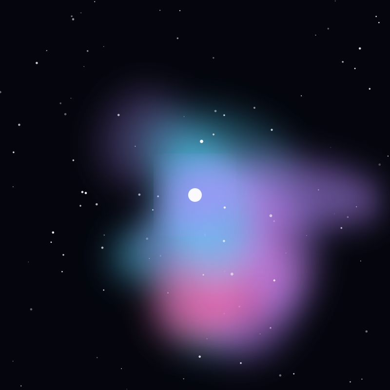

Nebula
Orion Nebula
A stellar nursery 1,344 light-years away, and the brightest region of star formation visible to the naked eye.
Object 21 of 26

Key facts
- Distance
- 1,344 light-years
- Radius
- ~12 light-years
- Type
- Diffuse emission nebula (H II)
- Catalogue
- Messier 42, NGC 1976
- Young stars
- 1,000+ (including the Trapezium)
- Mass
- ~2,000 Suns
- Constellation
- Orion
- Discovery
- 1610, Nicolas-Claude Peiresc
Overview
The Orion Nebula is the brightest region of star formation visible to the naked eye — the fuzzy middle 'star' in Orion's sword. It lies 1,344 light-years away and stretches about 24 light-years across, with a mass around 2,000 times that of the Sun.
It is the nearest region of massive star formation and the most studied of its kind. Under a dark sky it shows as a soft grey smudge; through any telescope it resolves into glowing wings of gas surrounding a brilliant core.
The Trapezium
At the nebula's heart are four massive, extremely young stars known as the Trapezium, only a couple of million years old. Their ultraviolet radiation floods the surrounding hydrogen with energy, stripping electrons and making the gas glow — the light we see is essentially fluorescent.
These stars are so luminous and short-lived that they are clearing a cavity in the cloud, pushing gas outward and slowly dispersing the nursery that created them. The nebula's glow is powered entirely by them.
A Stellar Nursery
Hubble observations revealed hundreds of protoplanetary disks — dark ovals of dust silhouetted against the glowing gas, each one a solar system in the making. These 'proplyds' provided the first clear evidence that disks of material surround newborn stars.
More than a thousand young stars have been catalogued in the region, in various stages of formation, from collapsing knots of gas to fully formed stars with debris disks still orbiting them.
Observation
The Orion Nebula is one of the few star-forming regions visible without a telescope, found in the sword hanging below Orion's belt. Binoculars show its oval glow, and a small telescope reveals the four Trapezium stars at its centre.
It is best placed in the winter sky and remains an accessible target from city locations, since its brightness overcomes moderate light pollution. Larger telescopes begin to show the dark dust lanes that divide the glowing gas.